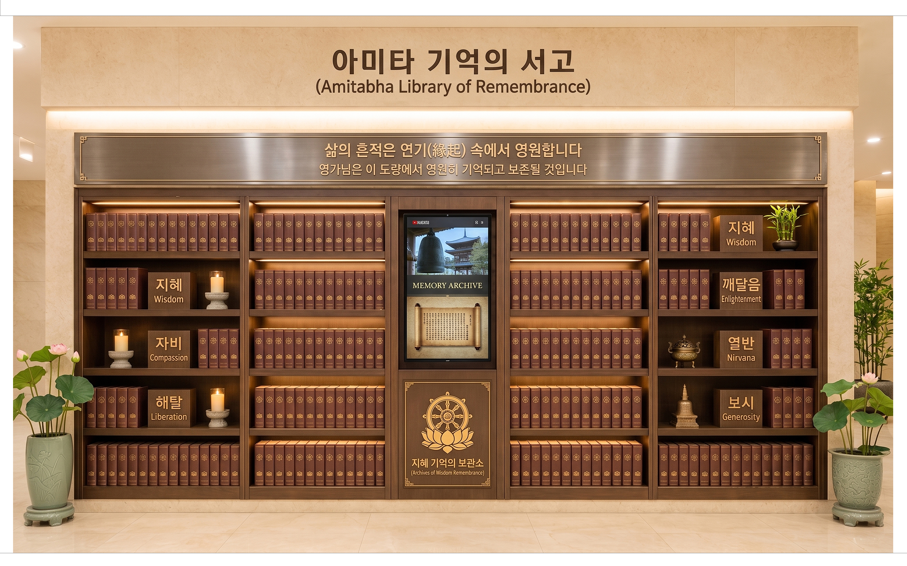
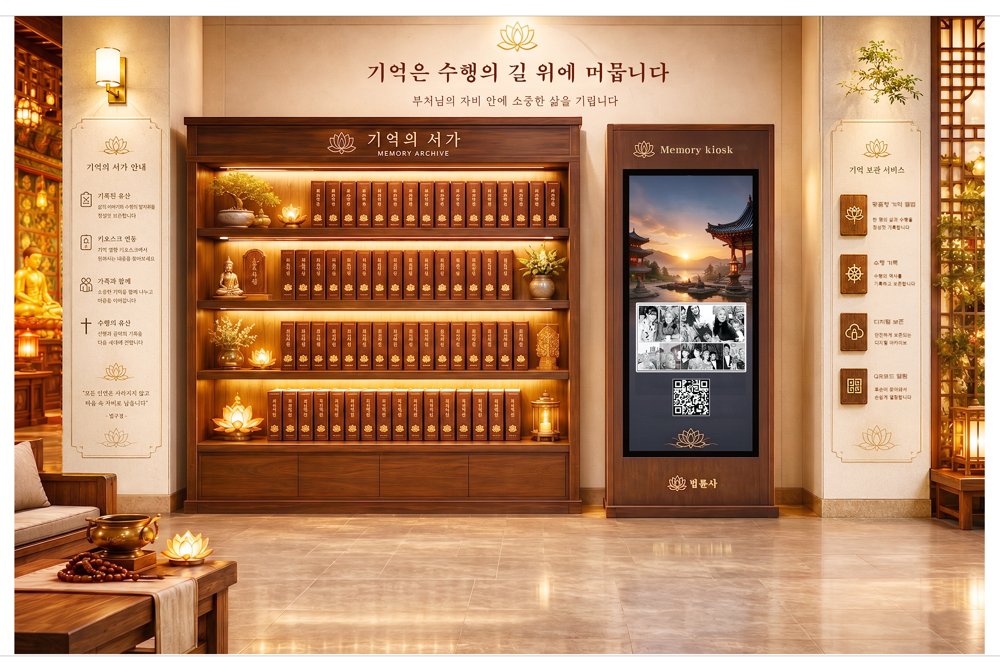

Temple Heritage
한 분의 생명 기록과 삶의 이야기, 수행과 공덕의 흔적을 한곳에 담아 사찰과 가족, 후손이 함께 기억하는 생명 유산 공간을 만듭니다.
DNA 실물과 사진, 영상, 약력, 수행과 보시의 기록을 함께 보존해 한 사람의 삶과 소중한 인연이 다음 세대까지 이어지도록 돕는 공간입니다. 어려운 기술보다 먼저, 왜 이 기록이 필요한지를 쉽게 이해할 수 있도록 구성했습니다.
DNA 실물, 사진, 영상, 약력과 함께 수행·공덕·보시의 기록을 남깁니다.
사찰이나 수행 공간의 유휴 장소를 따뜻하고 품격 있는 기억 공간으로 구성합니다.
가족과 후손, 신도 공동체가 찾아와 한 분의 삶과 인연을 다시 기억할 수 있습니다.
보존함 하나를 두는 데서 끝나지 않고, 한 분의 삶과 사찰의 역사가 함께 이어지는 공간을 지향합니다.
오랜 수행과 보시, 공동체를 위한 마음을 가족과 후손이 다시 볼 수 있는 기록으로 남깁니다.
신도 한 분 한 분의 이야기가 모여 사찰과 공동체의 살아 있는 기억 아카이브가 됩니다.
사진과 영상, 삶의 이야기를 보기 위해 가족이 사찰을 찾고 소중한 인연을 다시 이어갑니다.
목재와 따뜻한 조명, 연꽃과 불교 문양을 활용해 수행 공간의 고요함을 해치지 않도록 구성합니다.

삶의 기록과 수행의 흔적을 서가 형태로 정돈해 오래 보존하는 공간 구성 예시입니다.

보존함과 디지털 화면을 연결해 사진, 영상, 약력과 가족의 기억을 함께 열어보는 구성 예시입니다.
위 이미지는 공간 구성 예시입니다. 실제 명칭, 재료, 문양과 배치는 각 사찰의 전통과 공간 규모에 맞춰 조정할 수 있습니다.
기억의 벽은 보이는 설치물에서 끝나지 않습니다. 가족과 후손이 사진, 영상, 약력과 삶의 이야기를 다시 만날 수 있게 돕습니다.
유전자 검사는 시행하지 않으며, DNA 실물 보존을 위한 검체 준비와 보존 과정을 쉽게 안내합니다.
서비스 신청과 검체 보존 동의 후, 전용 키트를 이용해 본인이 직접 자가채취할 수 있습니다.
접수된 검체는 보존 절차에 따라 처리하고 외부 환경의 영향을 줄이도록 관리합니다.
DNA 실물과 사진, 영상, 약력 등 디지털 기록을 한 사람의 생명 유산으로 함께 연결합니다.